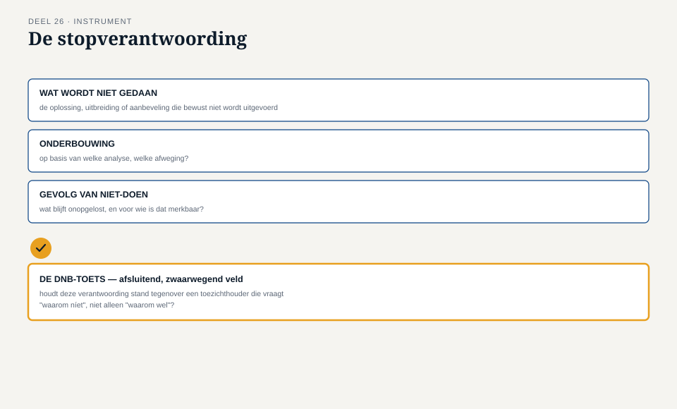

Deel 26 — Oplossingsevaluatie onder toezicht: invaren, gegevenskwaliteit, en verdedigbaar stoppen
Slidedeck · Ductus-cursus Business-analyse · niveau 3 · deel 26 van 30 · 22 slides
Slide 1 — Titel
Business-analyse — deel 26 Oplossingsevaluatie onder toezicht: invaren, gegevenskwaliteit, en verdedigbaar stoppen
Slide 2 — Terugblik
Deel 24: een vangnet, vooraf afgesproken.
Vandaag: het moment dat het daadwerkelijk afgaat.
Slide 3 — Doriens bevindingen
"Jullie rapporteren 95, onder de drempel van 100. Mijn steekproef laat zien: het werkelijke aantal ligt waarschijnlijk dichter bij de 130."
"Dat is boven de drempel."
"Dat is boven de drempel."
Slide 4 — Geen misleiding
Het soort verschil dat ontstaat wanneer "opgelost" onder tijdsdruk net iets te snel wordt toegekend.
Slide 5 — Waar we het over gaan hebben
- Interne evaluatie versus evaluatie onder toezicht
- Wanneer "opgelost" niet klopt
- Verdedigbaar stoppen
- De stopverantwoording
Slide 6 — Een nieuwe rol voor de analist
Niet zelf evalueren — de bevindingen van een onafhankelijke partij interpreteren en er een aanbeveling aan verbinden.
Slide 7 — Even serieus, ook als het ongelegen komt
De discipline: Doriens cijfers net zo zwaar wegen als je eigen cijfers.
Slide 8 — Waarom "opgelost" verschuift
Geen oneerlijkheid. Een voorspelbaar gevolg van deadline-druk, zonder onafhankelijke check.
Slide 9 — [Opdracht 1]
Bereken het werkelijke aantal. Is het vangnet geraakt?
Slide 10 — Het zwaarste moment in het vak
Adviseren om te stoppen — tegenover een organisatie die na maanden werk liever doorgaat.
Slide 11 — Verdedigbaar stoppen: drie elementen
Extern gevalideerd bewijs Het vangnet toegepast zoals afgesproken De gevolgen van doorgaan expliciet benoemd
Slide 12 — Iris' voorstel
"Kunnen we niet gewoon die 33 dossiers deze maand nog oplossen en dan alsnog doorgaan?"
Slide 13 — Invoelbaar, en toch
Het vangnet opnieuw onderhandeld op het moment dat het ongelegen uitkomt.
Slide 14 — [Opdracht 2]
Is dit verdedigbaar stoppen, of het omzeilen ervan?
Slide 15 — Dezelfde druk, mogelijk versterkt
Wat garandeert dat een haastige correctie binnen één maand niet dezelfde fout herhaalt?
Slide 16 — [Opdracht 3]
Wat kan er misgaan met Iris' snelle oplossing?
Slide 17 — De werkvorm van dit deel
De stopverantwoording
Signaal · Vergelijking met het vangnet · Opties · Aanbeveling
Slide 18 — Het veld dat het verschil maakt
Als je nu voor doorgaan kiest en het blijkt fout te gaan —
wat zou je dan tegen DNB moeten zeggen?
Slide 19 — Een vooruitwerkende toets
Vergelijkbaar met de schone lei-toets — nu gericht op de zwaarst denkbare uitkomst.
Slide 20 —

De stopverantwoording — met de DNB-toets als afsluitend veld
Slide 21 — [Opdracht 4]
Vul de stopverantwoording in voor fonds 1.
Slide 22 — Volgende keer
Eén stopadvies goed onderbouwen is één ding.
Deel 27: zorgen dat de hele BA-functie dit oordeel consistent kan vellen — standaarden, volwassenheid, begeleiding van junioren.